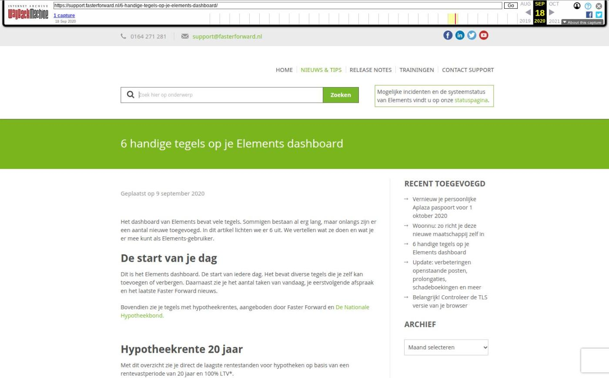

6 handige tegels op je Elements dashboard

Tekstinhoud
Geplaatst op 9 september 2020
Het dashboard van Elements bevat vele tegels. Sommigen bestaan al erg lang, maar onlangs zijn er een aantal nieuwe toegevoegd. In dit artikel lichten we er 6 uit. We vertellen wat ze doen en wat je er mee kunt als Elements-gebruiker.
De start van je dag
Dit is het Elements dashboard. De start van iedere dag. Het bevat diverse tegels die je zelf kan toevoegen of verbergen. Daarnaast zie je het aantal taken van vandaag, je eerstvolgende afspraak en het laatste Faster Forward nieuws.
Bovendien zie je tegels met hypotheekrentes, aangeboden door Faster Forward en De Nationale Hypotheekbond.
Hypotheekrente 20 jaar
Met dit overzicht zie je direct de laagste rentestanden voor hypotheken op basis van een rentevastperiode van 20 jaar en 100% LTV*.
Zo zie je direct bij welke bank een hypotheek met de laagste rente wordt geboden, wanneer de rente voor 20 jaar wordt vastgezet.
*Sinds 1 januari 2018 mag de maximale hypotheek 100% van de waarde van een huis bedragen. Dit percentage noemen we ook wel ‘loan-to-value’, of ‘LTV’.
Hypotheekrente NHG
Met dit overzicht zie je direct de hypotheken o.b.v. 20 jaar rentevast en met Nationale Hypotheek Garantie (NHG*).
Zo zie je direct bij welke bank een hypotheek met de laagste rente wordt geboden, wanneer de rente voor 20 jaar wordt vastgezet én er een Nationale Hypotheek Garantie is.
*Hypotheken met NHG voldoen aan de normen voor verantwoord lenen van het Nibud (Nationaal Instituut voor Budgetvoorlichting).
Omzet per periode
Deze staafdiagram weergeeft de totale omzet per periode van dit jaar ten opzichte van vorig jaar in dezelfde periode. Hiermee zie je hoeveel omzet je in iedere maand maakt en vergelijk je dit met dezelfde maand in het vorige jaar. Snel en overzichtelijk!
Afspraken per adviseur
Met deze grafiek zie je gelijk wie de meeste afspraken heeft gehad. Deze cirkeldiagram toont namelijk het aantal afspraken per adviseur van de laatst afgelopen volledige maand.
Aantal HDN aanvragen per week
Deze lijngrafiek weergeeft het totaal aantal aanvragen voor hypotheken (AX), levensverzekeringen (LX) en kredieten (KX) per week. Hiermee vergelijk je eenvoudig het aantal aanvragen van jouw kantoor (blauwe lijn) ten opzichte van het gemiddelde in Nederland (grijze lijn).
Binnenkort jarig
Een aantal klanten zijn bijna jarig! Wellicht is het dan leuk om alvast een e-mail klaar te zetten of beltaak in te plannen. Zo ben je attent en continu in contact met de klant.
Tip: je kan hier ook een campagne voor instellen. Lees er hier meer over.
Dashboard zelf aanpassen
Het dashboard is de startpagina van je dag. Daarom is het belangrijk om deze in te richten naar jou wensen. Dit doe je via de onderstaande opties.
Snelkoppelingen en tegels zijn te stellen via de knop ‘Dashboard Instellingen’.
Snelkoppelingen instellen
De snelkoppelingen zijn zelf in te stellen door onder Dashboard Instellingen de gewenste snelkoppeling van links naar rechts te slepen. Aan de linkerzijde zie je de snelkoppelingen die niet zichtbaar zijn. De snelkoppelingen aan de rechterzijde zie je terug op je dashboard.
Tegels instellen
Via de knop ‘Dashboard instellingen’ op je dashboard kun ook je de actieve tegels wijzigen. Als je een tegel op je dashboard wilt zien, sleep je deze van links naar rechts.
Bladwijzers instellen
Een tegel die je zelf kan aanpassen, is de tegel met bladwijzers. Via de knop rechtsonder op de tegel kies je de gewenste bladwijzers.
In de ‘Bladwijzers’ pop-up kun je bladwijzers aanpassen, toevoegen en verwijderen.
Categorie: Algemeen